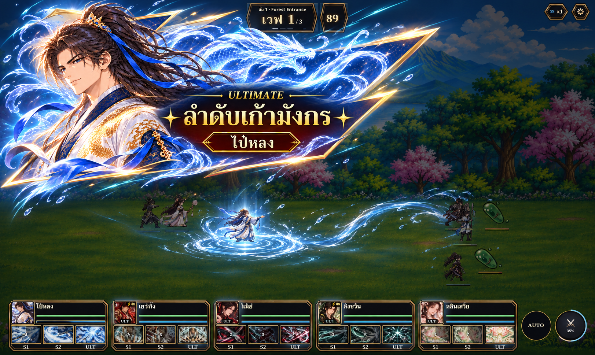

ภาพอ้างอิง / เกมจริง



ฟอนต์ใหม่เอียงเล็กน้อย ใช้อาร์ตแยกโปร่งใส ไม่มี HUD เก่าฝังในภาพ เพิ่มคลื่นออร่า แสงไหลตามกรอบ และละอองน้ำที่เคลื่อนไหวจริง ส่วนคลื่นบนสนามในภาพจำลองเดิมยังเป็นภาพประกอบ เกมใช้เอฟเฟกต์สกิลเดิม
คลิปด้านล่างอัดจาก Chromium หลังคลิกอัลติจริง ภาพเคลื่อนไหวตามเวลาปกติ ไม่มีภาพจำลองแทรกในคลิป

ฟอนต์ใหม่เอียงเล็กน้อย ใช้อาร์ตแยกโปร่งใส ไม่มี HUD เก่าฝังในภาพ เพิ่มคลื่นออร่า แสงไหลตามกรอบ และละอองน้ำที่เคลื่อนไหวจริง ส่วนคลื่นบนสนามในภาพจำลองเดิมยังเป็นภาพประกอบ เกมใช้เอฟเฟกต์สกิลเดิม